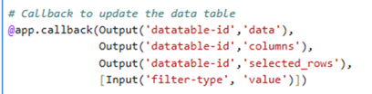
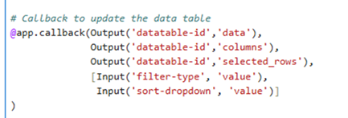
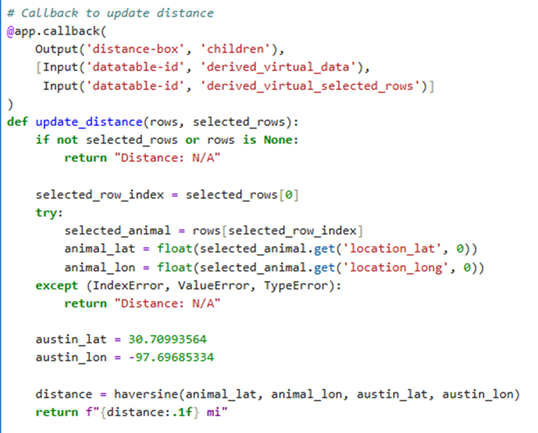
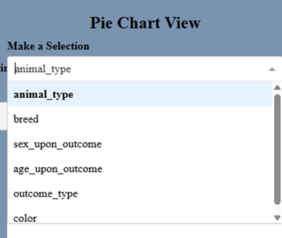
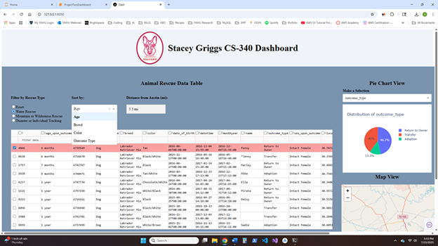

Artifact Description
The artifact is an interactive web-based dashboard built using the Dash framework in Python. Its primary function is to provide a user-friendly interface for finding rescue dogs by allowing users to filter and sort a large dataset of animal shelter records. The application relies on Pandas DataFrames to store, manage, and manipulate the data retrieved from a MongoDB database through the AnimalShelter CRUD class. The dashboard shows this information through an interactive data table, a dynamic pie chart visualizing selected animal attributes, and a map pinpointing the location of selected animals. This artifact was originally created in CS 340: Client Server Development as a project to demonstrate data visualization and interactive application development.
Justify the Inclusion in ePortfolio
I selected this project for my ePortfolio because it shows my ability to apply algorithms, work with data structures like Pandas DataFrames, and build full-stack applications using Python. This artifact connects to a MongoDB database, uses a custom module to pull in data, and transforms it into a Pandas DataFrame. I then updated the code to create an interactive dashboard that lets users filter, sort, and view animal data in a more intuitive and organized way, helping them better understand and interact with their selections. I also included maps and live calculations to make the app more engaging and useful. My enhancements include: Sort by Dropdown: I added a sorting dropdown that lets users organize the filtered rescue data by options like Age, Breed, or Color. This uses Pandas’ sort_values() method and demonstrates my ability to apply sorting algorithms dynamically based on user choices. Narrow selection by age, breed, color, or outcome type. Add the new dropdowns to the existing @app.callback to update_dashboard
Change the callback from this:

To this for filtering options sort-by dropdown:

Added new parameters to update_dashboard
Geographic Distance Calculation with the Haversine Formula: I built a “Distance from Austin (mi)” feature
that calculates how far each selected animal is from Austin using the Haversine formula. This adds real-world
value by combining math with location data to make the dashboard more informative and interactive.
Using derived_virtual_data from the data table, I retrieve the current filtered data dynamically, which lets
me calculate distances based on the user’s active selection. This shows my skill in applying a geometric
algorithm while handling numerical data like location_lat and location_long, providing users with real-time,
meaningful information based on their selection.
Create a callback to calculate distance from Austin:

Pie Chart Selection:

I also refined the pie chart options to include only the most relevant columns,
instead of allowing users to choose from every column in the dataset. I did this because some columns,
like latitude and longitude, do not make sense to visualize in a pie chart. By limiting the options to
meaningful categories like animal type, breed, or outcome_type, I made the chart easier to understand
giving better insight for the user.
Outcomes Achieved in this Milestone
I believe I have met the course outcomes I planned in Module One. By adding features like dynamic sorting, multi-criteria filtering, and the distance calculator using the Haversine formula, I demonstrated my ability to apply algorithms and work with data structures like Pandas DataFrames to solve practical problems. These enhancements also show my skills in building interactive and user-friendly applications. My outcome-coverage plans remain the same, and I will continue to focus on strengthening my understanding of algorithms, data handling, and software design throughout this project. Reflect on the Process of Enhancing and Modifying the Artifact Working on improving this interactive dashboard taught me a lot about algorithms, data handling, and building web apps. One big thing I learned was how easy it is to work with data using Pandas DataFrames. They make handling, filtering, and sorting large amounts of data simple and fast. I learned that Pandas’ built-in methods that are designed to handle large amounts of data quickly, instead of using slower step-by-step loops. Deciding what to focus on for my enhancements was also a challenge. I picked features like filtering, sorting, and the distance calculator because they were important for making the dashboard more useful and interactive. This project is teaching me that working with data structures and algorithms is a big part of computer science. I see the importance of these skills when it comes to solving real problems using the data. These concepts are used in nearly every area of tech whether it is software development, data analysis, or system design, so learning how to apply them now will be valuable in many future roles. I also learned how to use the Haversine formula. I needed to find a function to calculate distance that worked with Python. Then I needed to run it a couple of times to debug it to make sure it worked with all selections. This helped me see why it is important to understand the math behind an algorithm to make sure it works right.
Code Comparison
Original Dashboard

Software Design / Engineering Enhancement

Algorithm and Data Structure Enhancement

GitHub Repo: CS340 - Grazioso Salvare Dashboard
GitHub Repo: strong>CS499 - Computer Science Capstone
References
- Singh, M. (2024). Calculating distance between successive latitude longitude coordinates using Pandas. Medium. Retrieved July 27, 2025, from https://medium.com/@manishsingh7163/calculating-distance-between-successive-latitude-longitude-coordinates-using-pandas-287c15bc5029
- Twinkl Bajaj. (2022, September 5). Haversine formula to find distance between two points on a sphere. GeeksforGeeks. Retrieved July 27, 2025, from https://www.geeksforgeeks.org/dsa/haversine-formula-to-find-distance-between-two-points-on-a-sphere/
- Vignya Durvasula. (2023, October 26). Haversine formula for calculating GPS distances. AskPython. Retrieved July 27, 2025, from https://www.askpython.com/python/examples/calculate-gps-distance-using-haversine-formula